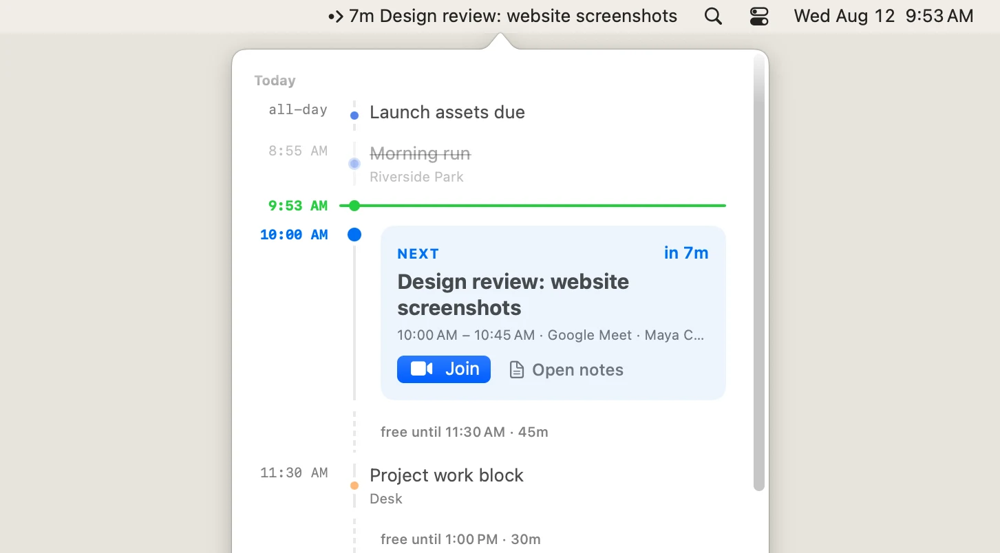
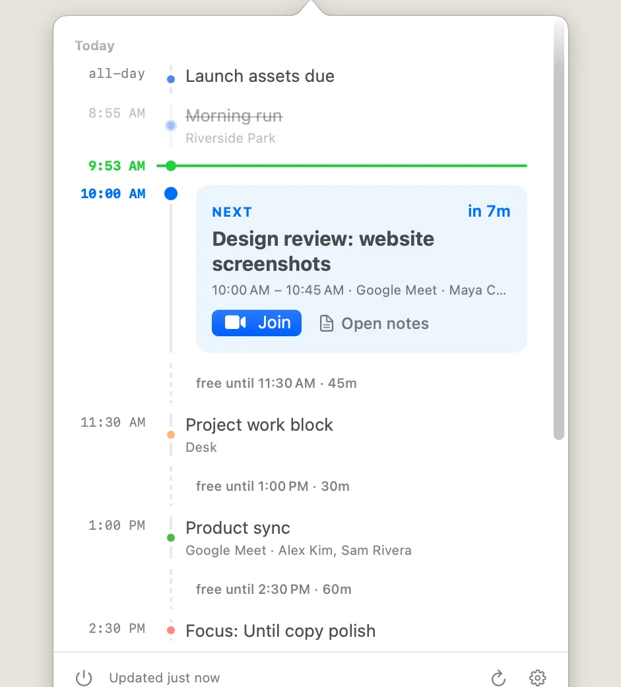

Until
Next up, always visible.
Google Calendar in your macOS menubar — countdown above, your day below.

Google Calendar in your macOS menubar — countdown above, your day below.

Notification
A native reminder arrives before every meeting; click it to join instantly, or hold it to open the event or snooze five minutes.
Timeline
Click the menubar and the whole day unfolds — one continuous timeline where free time has shape, not just a stack of meetings.

Meeting notes
One click on any event:
Focus
Precise filters hide declined invites, low-signal calendars, and all-day holds — so what's left deserves your attention.
Example rules from the built-in filter editor: events where my response is not Declined, calendar is none of two selected calendars, and all-day is false.
Until runs entirely on your Mac, talks straight to Google, has no account with us and no servers in between; tokens stay in the macOS Keychain, and Drive access is limited to files it created (drive.file scope). Full privacy policy →